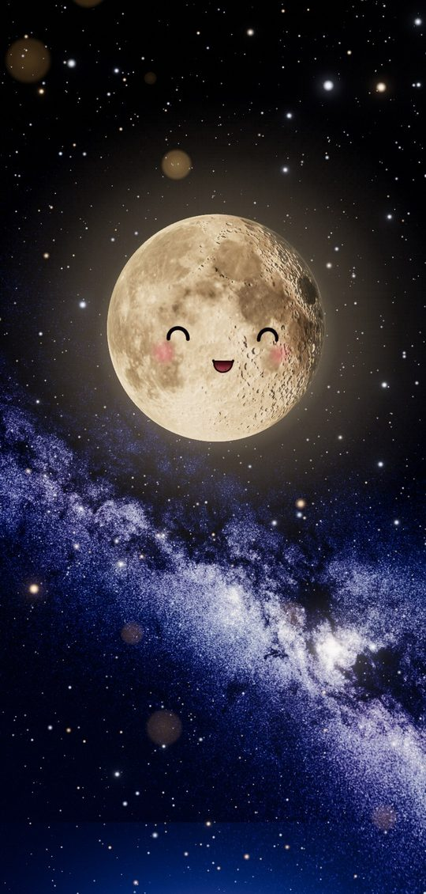

Words written in stars星星写的字
Its replies are spelled out by hundreds of tiny lights that fly in from the sky, one stroke at a time.它的回答由几百颗从天边飞来的小光点一笔一笔拼出来。
A companion for the night陪你度过夜晚的小伙伴
It doesn’t talk. It answers with its eyes, its light, and words spelled out by shooting stars. 它不说话，用眼神、光，和流星拼成的字回应你。
It remembers what you told it, and tomorrow it might ask how it went. Poke it, fling it, name it. It’s soft, springy and always happy to see you. 它记得你说过的话，第二天会想起来问你后来怎么样。戳它、甩它、给它起名字——它软软的、弹弹的，永远很高兴见到你。
In development · phone first · small beta planned for early 2027开发中 · 手机优先 · 计划 2027 年初小范围内测
Live demo: tap the moon, drag it, or type a few words. It runs a scripted brain here, not the real one. 实机演示：点它、拖它，或者打几个字。这里用的是演示剧本，不是真的大脑。
Every clip below is recorded from the app itself.下面每一段都是 app 里实际录下来的画面。
Its replies are spelled out by hundreds of tiny lights that fly in from the sky, one stroke at a time.它的回答由几百颗从天边飞来的小光点一笔一笔拼出来。
What you type floats in a bubble whose edge bends the starlight behind it, like a real gravitational lens.你打的字浮在一个气泡里，气泡边缘会把背后的星光弯过去，像真正的引力透镜。
Hold the voice button: a small black hole grows while you talk, then your words settle into it.按住语音键说话，一个小黑洞随着你说话慢慢长大，说完你的话落进它里面。
Poke it, fling it against the edges of the screen, spin it until it’s dizzy. It always bounces back.戳它、把它甩到屏幕边上、转到它晕——它总会弹回来。
On the first night it wakes up, asks what to call you, and lets you give it a name of its own.第一次见面，它醒过来，问你该怎么称呼你，再请你给它起个名字。

The Milky Way, the stars, sunrise and the moon’s phase follow your time and place. Tilt the phone and the sky has depth.银河、星星、日出日落和月相都跟着你所在的时间和地点走；倾斜手机，天空是有深度的。
“No rush. I’m right here.”「不急的，我就在这儿。」
No advice unless you ask for it, no life lessons, no to-do lists. It keeps you company.你不问，它就不给建议；不讲大道理，不列清单。它只是陪着你。
If you stay away, it simply misses you. It never wilts and never makes you feel bad for being busy.你很久没来，它只是想你；它不会枯萎，也不会让你因为忙而内疚。
Your name, what you look forward to, how yesterday went. A few gentle follow-ups a day, never more.你的名字、你在期待的事、昨天过得怎么样。每天最多轻轻问起两次。
If something serious comes up, it stays with you and gently points you to people who can really help.遇到很严重的事，它会待在你身边，并轻轻地请你去找真正能帮上忙的人。
The moon and its expressions, the real sky, star writing, voice, and a first brain with memory.月亮和它的表情、真实的星空、星星写字、语音，以及第一版会记事的大脑。
Painting on the moon with a little paint, memory stars, and letters it writes you in starlight.用一点点颜料在月亮上画画、记忆星、它用星光写给你的信。
A small group of outside testers on their own phones.一小群外部测试者，在他们自己的手机上。